最近，忽然觉得累了，干脆给自己放了个暑假，休息了两个月。
周末陪孩子的时候，发现两岁多的女儿很想看电视。
害怕她被喜羊羊污染，所以我花了点时间去找一部适合她的作品。
我挑选的标准有两个。
她喜欢看。
我也喜欢看。
这样我便可以陪她一起看。
于是，《阿尔卑斯山的少女》成为了我和女儿一起刷的动画片。
这部动画根据著名儿童小说《海蒂》改编而成。
导演是高炯勋，而负责场面设定和画面构成是我们所熟知的宫崎骏。
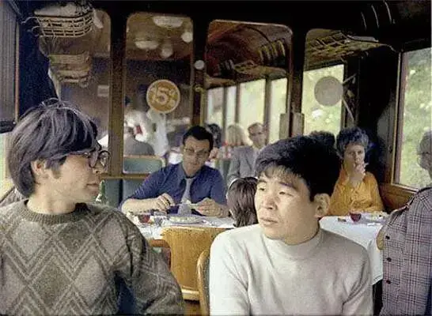
△左边为宫崎骏，右边为高炯勋，其代表作为《萤火虫之墓》，1968年，二人首次合作合作执导冒险动画电影《太阳王子霍尔斯的大冒险》，《阿尔卑斯山的少女》为二人第二部合作的作品，二人日后共同创立了吉卜力工作室
从这部作品中可以看到日后吉卜力许多的影子。
《阿尔贝斯山的少女》
这只山羊仿佛神灵一般出现在阿尔卑斯山
▼
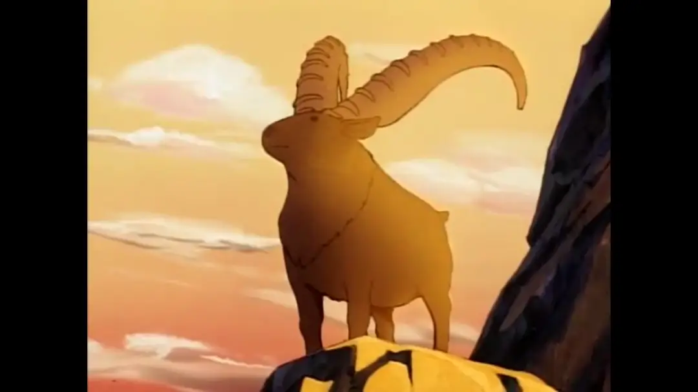
《幽灵公主》中的森林保护神
▼
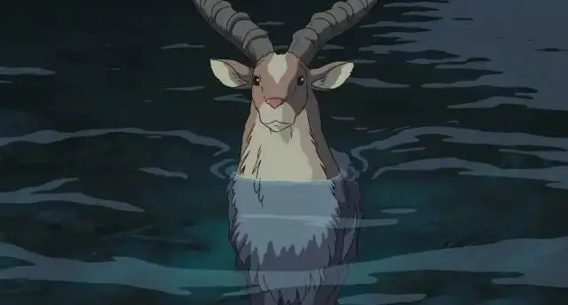
作品虽然制作于1974年，但制作相当精良。
当时光是为了画面，剧组曾亲自去阿尔卑斯山取景三周。
配乐也相当优美动听。
所以，《阿尔卑斯山的少女》共52集，但一点都不枯燥，每一集就像一册精美的绘本，看完一集后还可以再和孩子讲一遍。
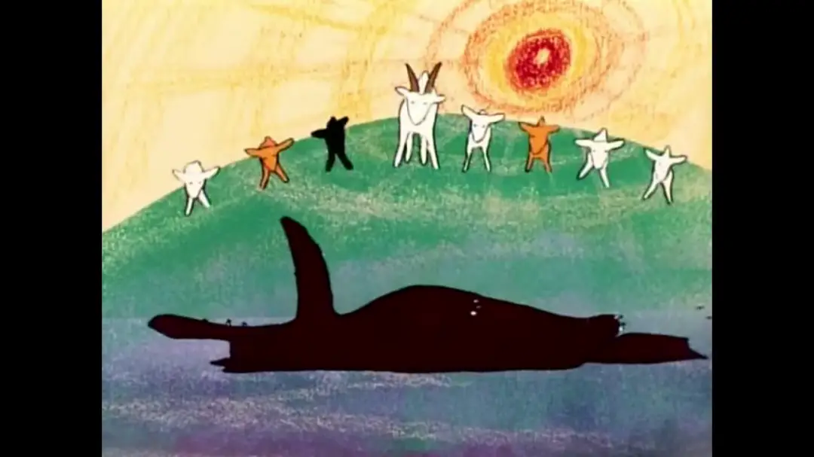
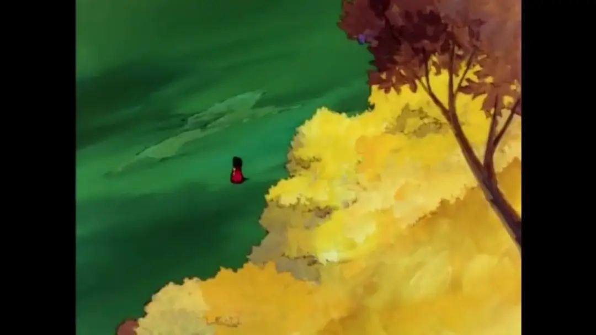
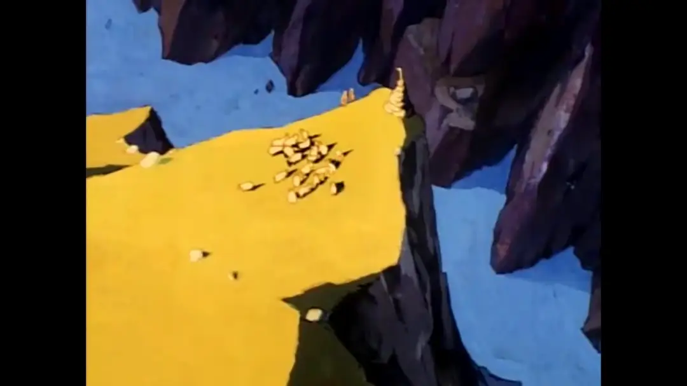
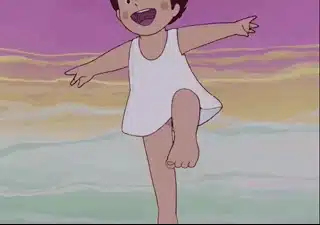
这部作品也是东方人对西方的名著改编，感情刻画及画面表现极富东方式的细腻和写意。
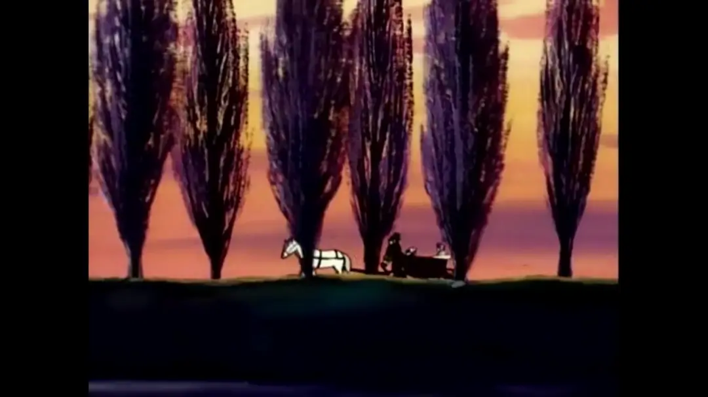
同时这部动画保留了原作中的救赎内核，会为孩子的心中播下很多美丽和希望！
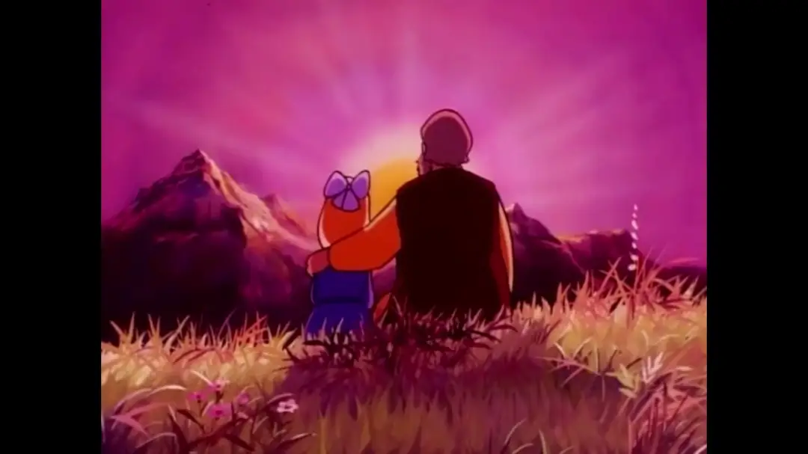
-01- 阿尔卑斯山
故事的主角是一个5岁的小女孩，她叫小莲。
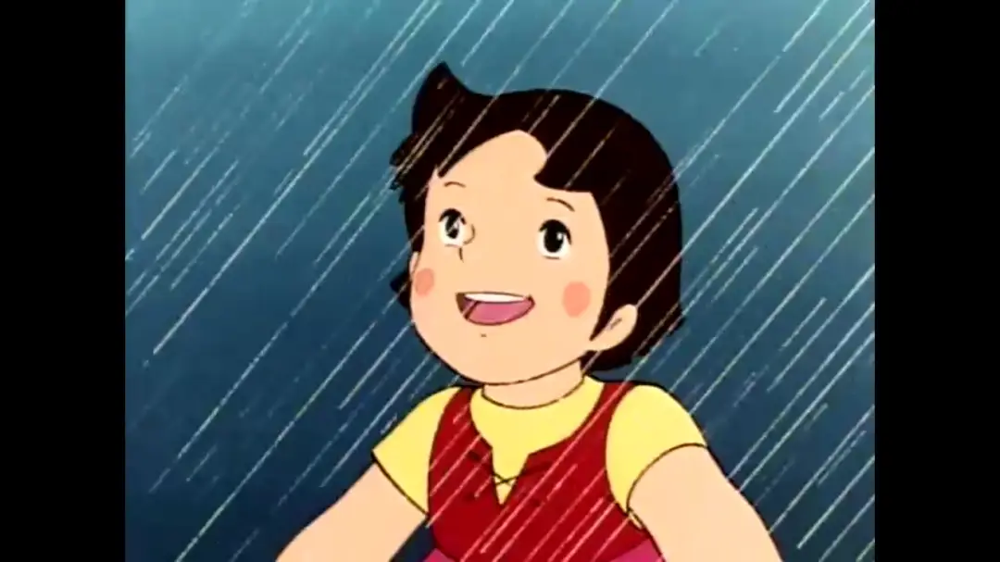
△原著中小女孩叫海蒂，小莲为台湾引入配音时起的名字
她的母亲在她很早的时候便去世了，于是小莲一直跟着姨妈生活。
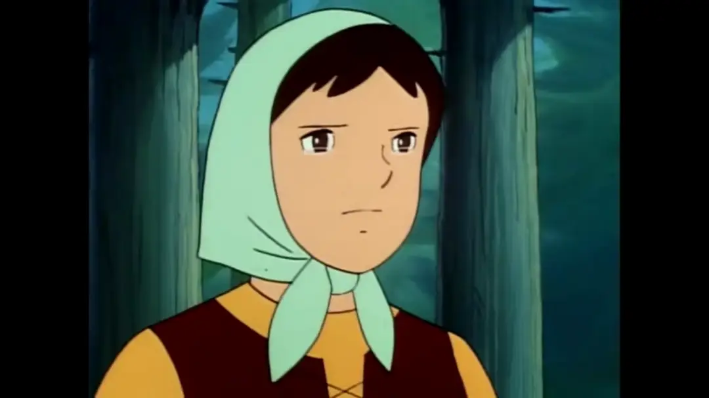
后来，因为姨妈想要去法兰克福打工，没有精力照顾小莲，所以便将小莲委托她的亲爷爷来照顾。
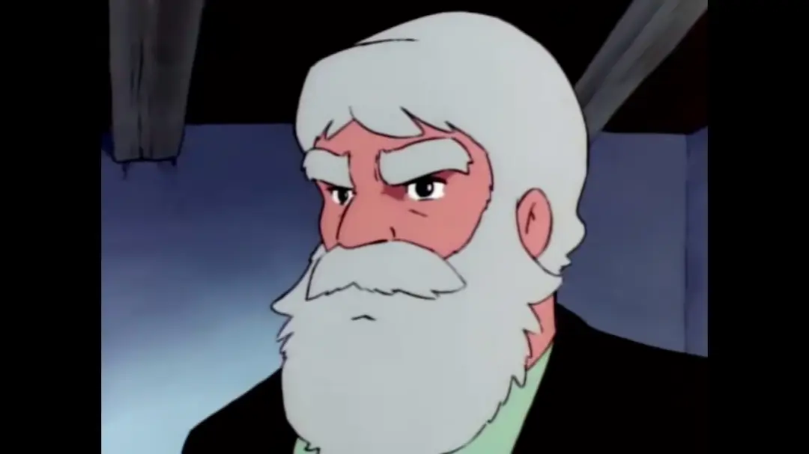
而这在所有人看来，是一个非常错误的选择。
因为小莲的爷爷是一个不谙事理、离群索居住在阿尔卑斯山上的怪老头。
在他的脸上看不到笑容，从他的口中也听到不到任何礼貌和问候。
将这么小的孩子送上山，肯定会遭到冷待，甚至是虐待。
可姨妈别无选择，只能将孩子托付给这个怪老头。
从将小莲送上山，这部作品花了18集的时间去刻画小莲与爷爷、牧羊孩童小豆子以及和阿尔卑斯山之间的故事。
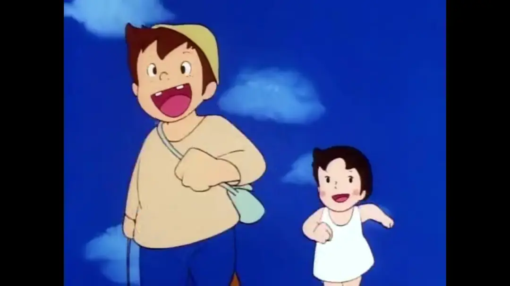
除掉开头结尾，每一集正片至少有21分钟。
刻画山、老人和小孩，这一部分花了378分钟，有6个多小时。
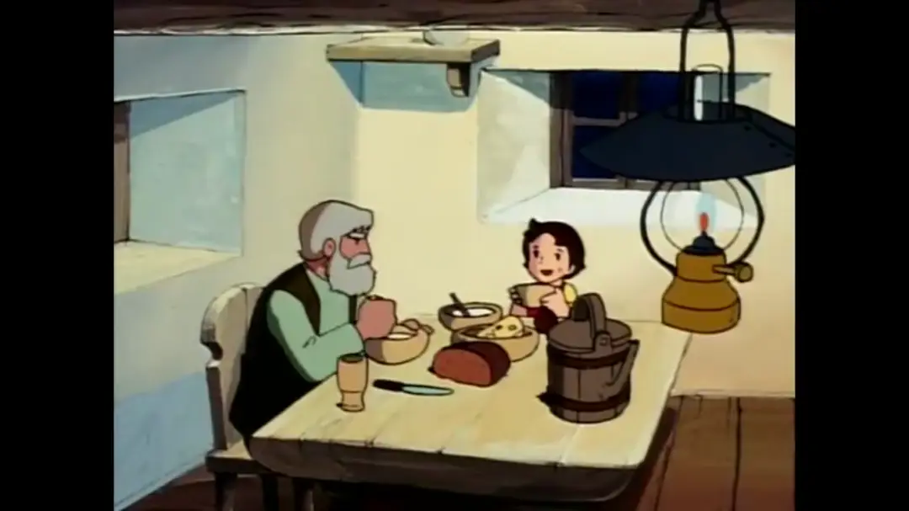
这是不小的篇幅，如果处理的不好，会看起来特别冗长。
但这部动画却刻画的非常细腻和丰满，通过表现阿尔卑斯山的四季变化，不仅带我们深入感受了阿尔卑斯山的壮丽，更通过与大自然的互动见证了小莲的成长。
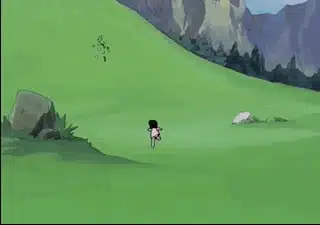
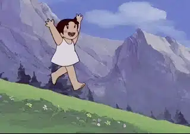
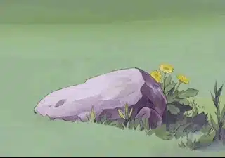
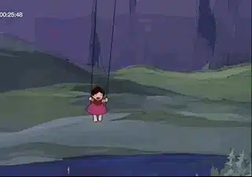
比如在第三集中，小莲一大早跟着牧养孩童小豆子一起上山放羊。
在这一天里，小莲目睹了阿尔卑斯山的日出日落，也第一次看到了高空中飞翔的老鹰，还有可爱的山羊、机灵的土拨鼠、美丽的花朵......
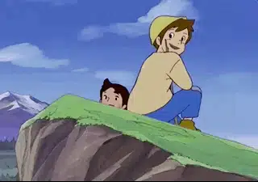
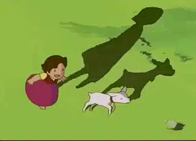
这一切都让小莲陶醉和兴奋，小莲在山上采集了很多美丽的花朵准备送给爷爷。
晚上回来后，当小莲打开装满花瓣的布，准备给爷爷惊喜的时候，却发现花朵都已经枯萎。
这让小莲很悲伤，怎么会这样啊。
爷爷非常有智慧，他告诉小莲：因为这些小花他们想要在外面嗮太阳，如果是你，你也不想被包在里面吧。
小莲若有所思，对着花朵说，“对不起我再也不会摘你们了”。
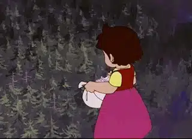
当晚，小莲向爷爷表达了很多疑问。
比如，为什么老鹰会看上去那么凶。
爷爷耐心的告诉她：那是因为老鹰看到人类挤在一团住在下面，有时还会吵架，所以他在嘲笑我们，觉得人类应该独立一点，走自己的路......
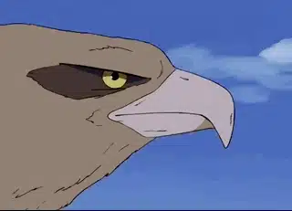
第一次，“独立”这个词以这样一个生动的形象在小莲的脑海中建立。
同时也不着痕迹地表现了爷爷为什么选择独居在山上，因为爷爷就是这只孤傲的老鹰。
小莲对日落也很不理解，她问爷爷，为什么山就像火烧起来了，一下子又变成玫瑰色，后来一下子就不见了。
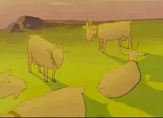
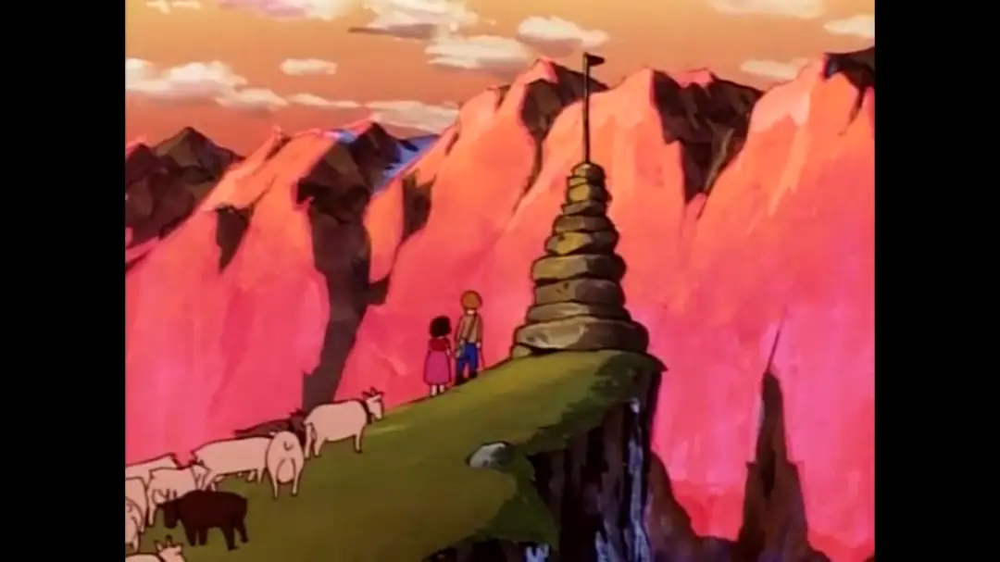
爷爷告诉小莲：那是太阳，因为他要休息了，他害怕明天大家把他忘记，所以把最美丽的光投射出来。
这些充满童真和想象力的对话充满在整部作品中，让人难以忘怀。
小莲在这些时间里也得到了很多成长和学习。
阿尔卑斯山的暴雨让孩子亲身感受到大自然变化的可怕。
照顾被雨淋湿的小鸟，让她懂得了如何去关心和爱护别人。
而当小鸟为了要躲避严寒而飞走时，也让小莲学会不得不接受一些难以避免的告别，并最终学会了放手和祝福离别的朋友。
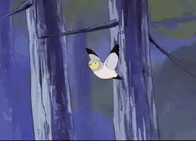
小莲还学会了挤羊奶和做乳酪。
有一次，她答应帮助爷爷搅拌羊奶，后来因为小羊来找她，她便放下手上的工作去和小羊玩耍。
当她回来时，却发现爷爷在地上默默地用铲子铲满是焦黑的锅子，顿时，小莲觉得很对不起爷爷。
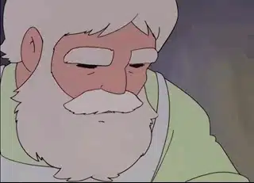
爷爷并没有怪小莲，但这却让小莲觉得更加内疚。
她来到家门口的松树下，伤心地看着微风吹动的大树，小莲忽然想明白了“如果严格管教小羊，也许就不会发生这些事情了”。
就这样，关于“立规矩”的功课，小莲便从生活的点滴中学会了。
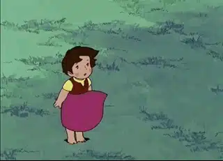
这部分，对于阿尔卑斯山四季的刻画也非常棒。
微风吹动的草浪里藏着的是阿尔卑斯山的秋天。
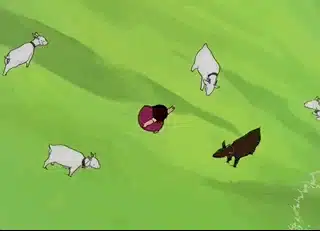
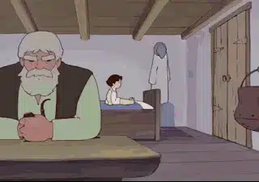
飞速滑动的雪车是阿尔卑斯山的冬天。
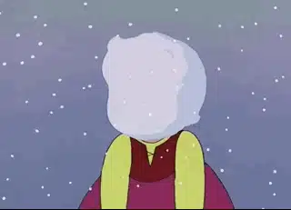
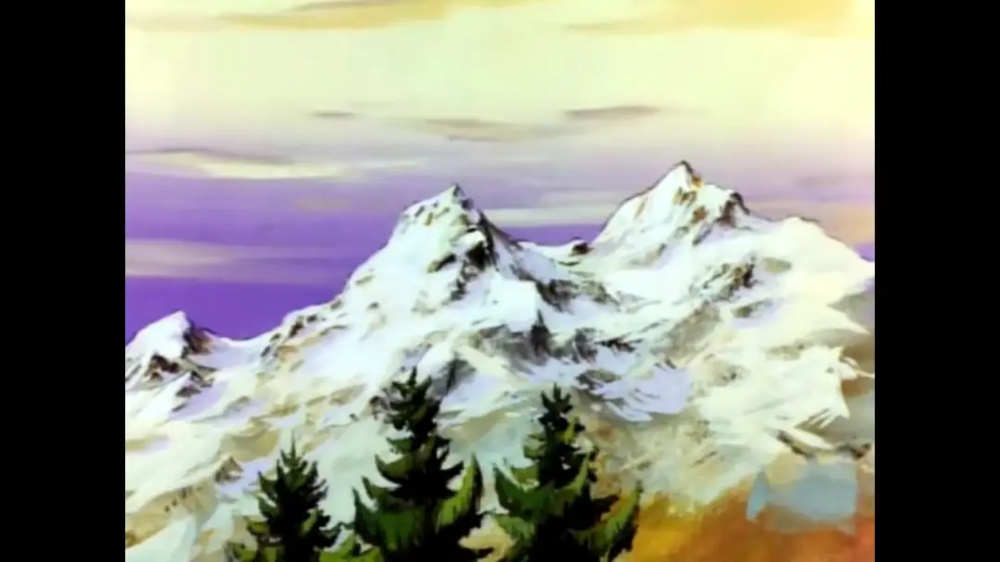
冰层融化下的雪割草预示着阿尔卑斯山春天的到来。
漫山的朵朵鲜花又写满了阿尔卑斯山夏日的诗意。
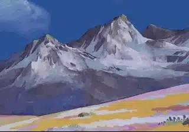
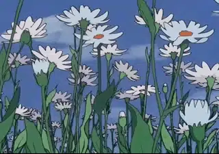
在这四季的更迭中，小莲和爷爷成为了阿尔卑斯山上最幸福的人。
-02- 失落的梦想
转眼，小莲已经长到8岁，到了必须要上学的年龄。
爷爷认为没有必要上学，这让镇上的人都觉得很不安。
为此，镇上的牧师专程到山上劝说爷爷要送小莲去上学，但依旧遭到爷爷的拒绝。
有一天，小莲的姨妈从法兰克福回来。
她非常激动，因为她有一个天大的好消息要告诉小莲。
在法兰克福有一个富贵人家，这家的独生女小芬从小体弱多病，而且小芬的脚患有疾病，她只能靠轮椅来行动。
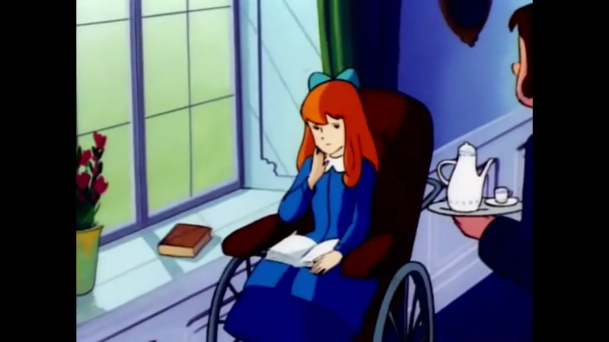
因为身体不方便，小芬一直呆在家里，家人觉得小芬太孤单，想要找一个性格活泼的女孩来陪伴小芬。
姨妈曾在这个家庭做工，便立刻想到了活泼可爱的小莲，于是她向这家的管家推荐了小莲。
管家认为小莲比较符合自己的期待，于是让姨妈回去将小莲接过来。
这个宝贵的机会可以让小莲在优越的环境中成长，并受到良好的教育。
因此，姨妈迫不及待地上阿尔卑斯山，将好消息告诉了爷爷，可这依旧遭到了爷爷的冷脸。
无奈之下，姨妈最终连哄带骗将小莲从爷爷的身边带走。
随着轰隆隆的火车声，美丽的阿尔卑斯山逐渐消失在小莲的视线，小莲只能伤心的流泪。
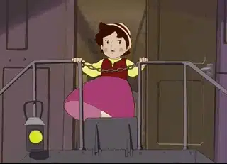
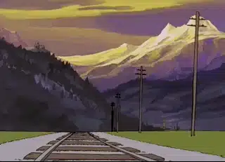
对于小莲在法兰克福的生活，这部作品也花了三分之一的篇幅来刻画。
我们所习惯的城市，在一个从大自然走出、充满童真的孩子眼中又会是怎样的。
当小莲第一次从马车下来，小小的她抬头望着高大的楼房充满了迷茫，城市空间的密集和逼仄让小莲的肢体表达变得很拘谨。
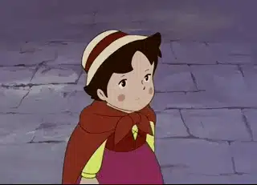
城市里的人，虽然彼此的空间距离很近，但却非常疏离，当小莲很好奇地走近去看一个可爱的宝宝时，小宝宝忽然一阵大哭。
抱着宝宝的妈妈不由自主地向小莲表示了嫌弃和讨厌，一下子，天性活泼的小莲变得不知道如何和身边人相处。
早晨醒来，小莲总是习惯大自然的芬芳，可在法兰克福，当小莲打开窗户后，依旧是铜墙铁壁，小莲不禁感慨：
“全都是石头！爷爷，这里什么也没有。”
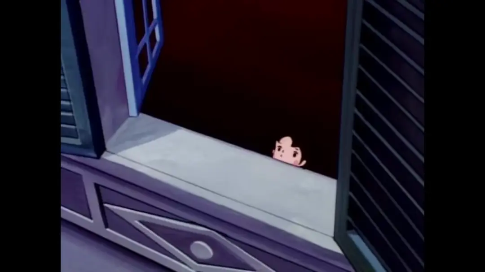
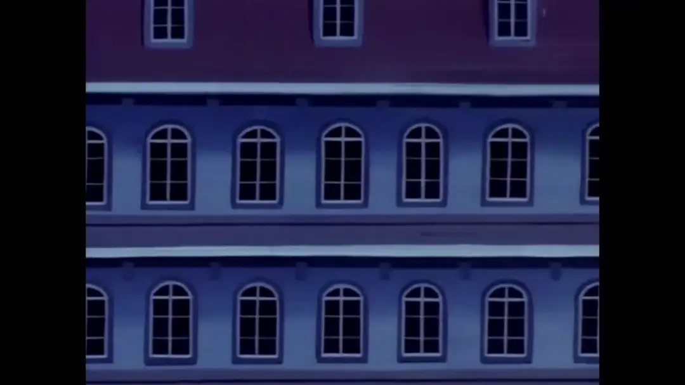
为了能够看到阿尔卑斯山，小莲甚至跑到教堂，爬上法兰克福最高的塔顶。
但即使是最高的塔，也依旧看不到梦想中的山。
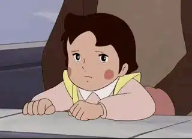
生活便利的大城市看似拥有一切，那却用这“一切”将人类从大自然中永久地绑架了。
人类用自己的智慧和知识为自己创造了很多幸福，但却远离了大自然的恩泽，生活变得越来越“贫瘠”。
而不能走路的小芬就代表了人类的这种悲剧，虽然生活优渥，但却失去了行走在大自然的能力。
小芬也因此变得非常孤独和敏感。
除了空间的压抑，大城市还有一个显著的特点，那便是充满压迫感的时间。
大管家便代表了城市的这一面，到点睡觉，按时吃药，然后再按时上课，小莲和小芬的生活必须这样有条不紊......
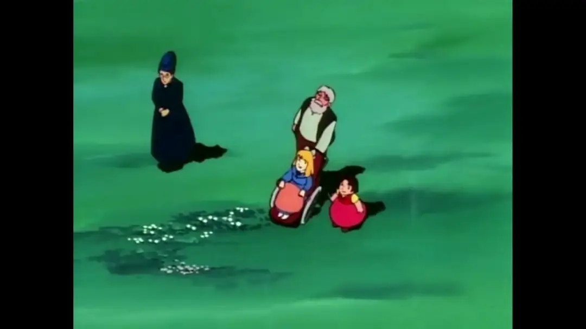
她对人类的理性和科学拥有的近乎偏执的自信，坚信只要按照科学的作息和安排便可以让小芬变得更好。
这种盲目的自信让大管家变得非常傲慢，无法看到小芬的真正需要和内心的孤独。
所以，当小莲出现在小芬的面前时，这是一个新的世界，这个小女孩的脑袋里总是装满着各种生动的故事，她的身上充满着生命的热忱和自由。
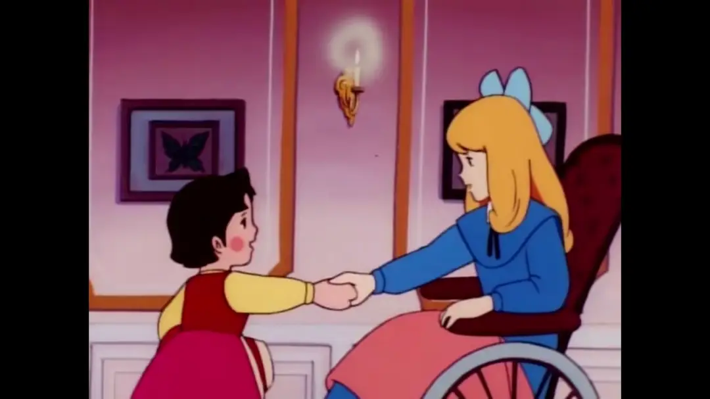
相较于小莲，小芬从书本里学到的大自然空洞又沉闷。
因此，小莲的到来在小芬的心中留下了很多希望和憧憬，小芬也希望能够见到小莲所描述的天堂，能够自由自在地奔跑。
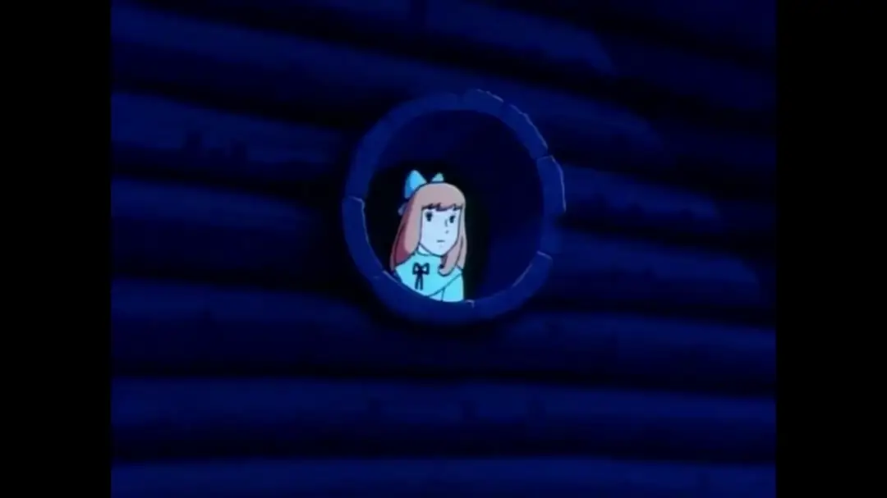
-03- 重新得力
对家乡和爷爷的思念，让小莲无时无刻不想回到阿尔卑斯山。
但因为不忍心让小芬孤单一人，所以小莲总是压抑着自己对家乡的思念和表达。
最终，小莲因为长时间的压抑患上了夜游症。
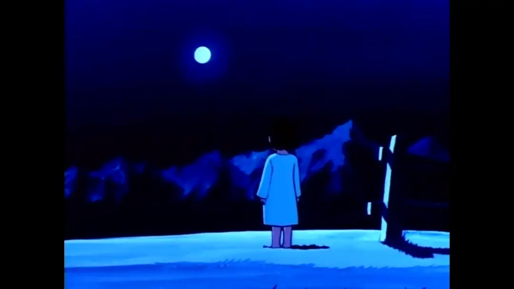
出于小莲的安全考虑，最终那家人将小莲送回了阿尔卑斯山。
对于最后一部分，这部作品一样用了三分之一的篇幅。
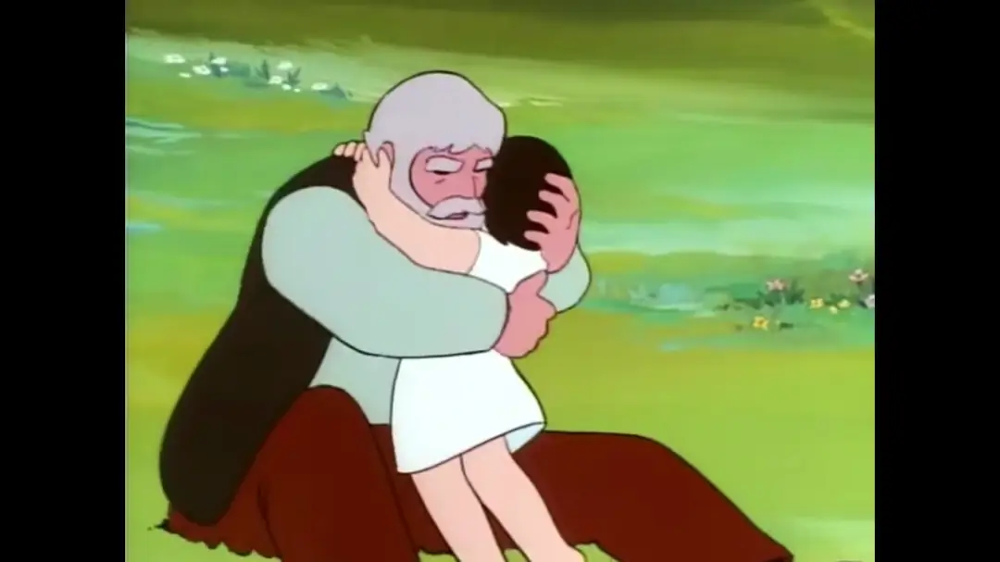
这部作品最为成功的地方是没有极端化的表现。
第一部分并未极端化地美化阿尔卑斯山，大自然也存在残酷可怕的一面，比如可怕的暴风雪和陡峭的悬崖。
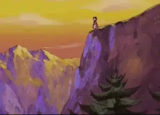
第二部分也未极端丑化城市的生活，在法兰克福，小莲也感受到了小芬奶奶的幽默和慈爱，也渐渐地喜欢上了读书。
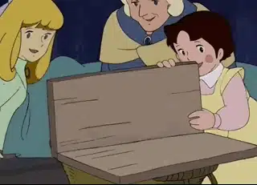
对于人物的刻画，也不是简单的脸谱化呈现，例如爷爷虽然对小莲很疼爱，但对其他人确实有些不近人情。
对于可恶的大管家，也不是把她刻画为一个极端自私无情的女人，她让人讨厌更多是因为她对于自己那一套理论的偏执，当最后她看到小芬的脚变好了，她也改变了对小莲和大自然的看法。
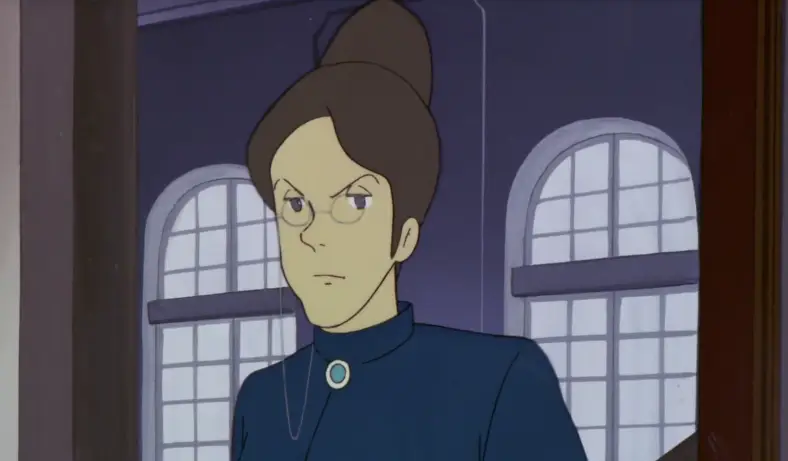
所以，电影最后一部分的刻画也是非常细腻真实的。
首先是爷爷的转变，小莲的回来让他激动不已，他心想再也不能让小莲离开自己。
当他注意到小莲很喜欢读书的时候，他明白自己应该要将小莲送去读书。
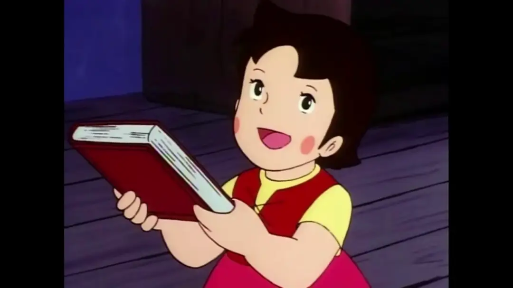
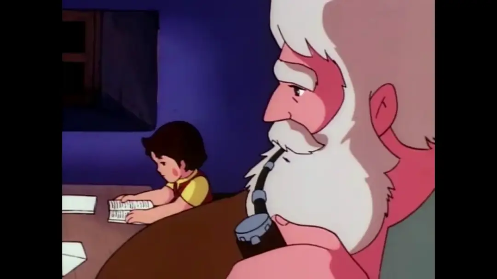
所以，他为了小莲，开始学着重新融入群体，并且为了小莲上学方便，还在镇上专门修缮了一个新家。
而对于小芬的转变刻画地最为细腻，她并不像电影版那样因为生活了一段时间就忽然奇迹般地站起来了。
对于小芬身体的恢复，首先的关键是让她的内心拥有站立起来的强烈渴望。
此前在法兰克福，小芬一个人生活在封闭的房间里，心情一直得不到释放。
当小芬来到阿尔卑斯山后，美丽的大自然、新鲜的空气、活蹦乱跳的小伙伴渐渐让小芬萌生了要站起来的渴望。
在山上，因为自己行动不方便，爷爷、小豆子以及小莲会为了她做出很多牺牲和改变。
比如小豆子为了让她看到美丽的风景，一路气喘唏嘘地背着她。
而小莲为了照顾小芬，选择和小芬一起留在家里，而不是更加自在地去山上游玩。
第一次，小芬意识到自己给身边的朋友带来了多么大的麻烦。
渐渐地，想要变得独立自主成为了小芬心中暗下的决心。
为了让小芬能够站起来，大家首先每天帮助小芬活动腿部肌肉。
当小芬站起来后，为了下定决心可以自由行走，小芬让爷爷将自己一直依赖的轮椅收了起来，开始努力练习走路。
大自然的神奇、友情的支持、家人的渴望以及自己逐渐萌生的自尊心，最终让小芬恢复了健康。
这部作品对于细节的刻画让人叹为观止。
-04- 神圣的救赎
儿童文学伟大之处在于，能够从充满罪恶、败坏的人类世界里简化抽离出一种简单的、清晰可见的框架，并且最终借着生动有趣的故事将希望的种子埋在每一个孩子的心中。
这部作品不论表现的多么平衡，作为大人，我们都知道那都是充满理想主义的。
贫民百姓哪有那个条件日夜住在阿尔卑斯山。
普通人家哪有那么多时间去陪伴自己的孩子。
人贩子、儿童性侵、食品安全猖獗的今天，我们怎么可能放心地让孩子远离我们的视线去自由的奔跑.......
而这样的作品真正的意义在于去背后传递出来的信念和精神力量。
其实，这部作品有一个不起眼的人物是非常绝望悲观的，那便是小豆子的奶奶。
她双目失明，又因为家境贫寒，只能用不好的牙口去啃硬硬的面包。
从奶奶家的布景可以看到，奶奶家的墙壁上挂着一幅耶稣像，在不容易的生活里，这份信仰似乎曾是她的希望。
可是奶奶因为双目失明却没有办法去阅读自己珍藏的祈祷书。
所以，当小莲第一次见到奶奶时，小莲很兴奋地告诉奶奶自己在山上的经历，可老奶奶却叹着气说“不论是红色的太阳，还是黄色的花，这个世界再也不会赐给我光明”。
奶奶的话让幼小的小莲不知所措和无能为力，小女孩只能扑在奶奶的腿上哭泣。
当小莲在法兰克福学会识字后，她回来为奶奶读那本关于祈祷的书籍。
于是，这部作品最大的精神内核借着这段祈祷词得以表达：
金黄色的太阳啊
充满着喜悦和快乐。
不如意的我们
因为接受这耀眼的阳光而重获新生
现在，我们站起身来，
以愉快开朗的心情，
抬起头仰望着蓝天。
神的救赎与慈爱
治愈我们心中难以忍受的伤痛。
让我们的心灵在这世上得到永远的平静。
在此神向世人宣告苦难的结束，
惊涛骇浪都平息了下来，
期待已久的日光普照着大地
在天空的乐园里充满着无尽的喜悦和纯净的安详
我所期待和盼望着正是如此
我是多么希望能够回归那片乐土
我希望万物都能够得到救赎
纵然这世界波涛汹涌
也要努力感受内心的平静
如果我们的双眼被黑暗蒙蔽
请照亮我的心
我便可以报着回到故乡的喜悦回到这世界
奶奶听到这些祈祷词后，非常激动“小莲谢谢你，奶奶的心中忽然变得好明亮”。
这部作品便用画面和故事生动地再现了这个祈祷，给满是伤痕的世界传递了希望。
这段话也让我非常感动，它深刻地概括了本片的精神内核，上帝创造了天地万物，大自然拥有慰藉人心的神奇力量。
我们一生中有学无尽头的人类知识，我们总是一头扎进各种理论思辨中乐此不疲，但是上帝所创造的无字天书——大自然，才是我们更需要认识和了解的宝藏。
无法想象，如果有一天我们的孩子对大自然失去了鉴赏力，那将是一件多么可怕的事。
希望这部作品，能够从小在孩子的心中留下热爱大自然和坚信救赎力量的种子。
这里没有挑逗你眼目情欲的小鲜肉
也没有挑动你肉体情欲的段子
更没有膨胀你今生骄傲的鸡血
我们只在乎那些最质朴真诚的作品
在那里我们才能恢复真正的想象力
我们也坚信这才是我们真正需要的

ID:Six_hundred_hits
长按二维码，一键关注
【六百击】
电影评论
尽情分享朋友圈

微信二维码打赏通道